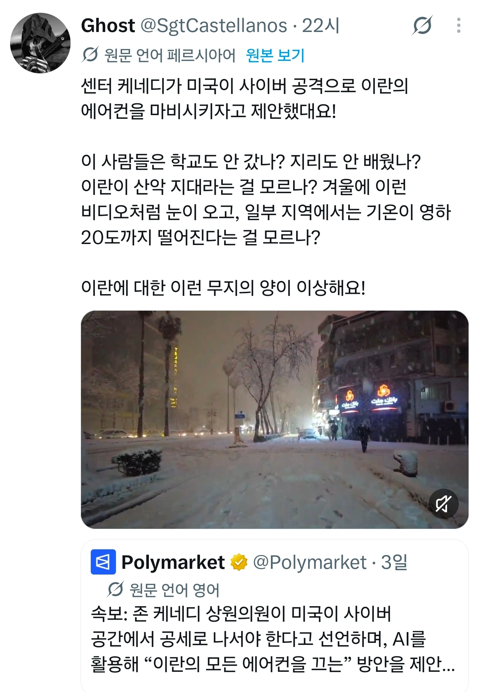

우리 지금 눈온다 색햐 ㅋㅋㅋㅋㅋ

우리 지금 눈온다 색햐 ㅋㅋㅋㅋㅋ
에어컨 끈다고 항복할거였음 진작항복했지;
그럼 히터를 끄고 에어컨을 틀자
미국새끼들이 타국가 문화나 그나라 기후모르는게 하루이틀도 아니고 그래서 미국이 2차대전 이후로 전쟁 승률이 높지않음
근데 그런 점 때문에 문화인류학 책이 존나 잘 나옴 ㅋㅋㅋㅋ 모르니까 초엘리트한테 연구비 주고 쟤네들 분석 좀 해봐라 시켜서 명서 뽑아냄
돈 많으니까 돈 줘서 분석은 시켜놓고 정작 공부는 안함
히터를 꺼야겠네
전쟁을 무과에 맡겨야지 문과가 간섭하는 순간 조때는겨
케네디에 뭔 상원의원직인 사람이 있나 했더니 존 닐리 케네디 라는 사람이네
그럼 히터꺼서 동사시켜~
에이 유럽이랑 프랑스 사이버테러한게 이혁수새끼들이니까 그에 걸맞게 주요시설물자 온도 해킹으로 맞대응하잔거겠지. 이란새끼들이 혈액보관소 같은것도 씹창내려했으니까
에어컨도 온라인임? 이란의 it기술 너무 무섭다
눈 오는 나라인지 처음 알았네
내륙부는 사막인데, 보통 사람들이 많이 몰려사는 지역은 고원부에 위치하고 있어서 지중해성 기후~온난스탭기후 정도의 무난한 기후이긴 함. 추운 곳은 오라지게 추워서 영하 20~30도까지도 떨어지는 언럭키 카자흐스탄 같은 동네도 있음...
뭔넘의 케네디는 끝도 없이 나옴?
넌 인자부터 k케네디여
생각보다 흔한 성인듯? 나도 한명 만난적있는데, 히스패닉 목수였음 ㅋㅋ
오 글쿠나
스마트폰에 적외선 센서 있었다면 불가능은 아닐지도 ㅋㅋㅋ
사이버공격(트럼프 나체사진)
중동=사막=더움 단순한 사고였나?
이란이 덥기만했으면 거기서 제국이 몇번이나 발원하지도 못했지
저딴 마인드로 전쟁을 벌이니 최강의 군대로 병신짓이나 하고 있지
지하에 전쟁물자 쌓아놓는곳 습도제어 하는 에어컨을 끄자고 말한건가? 뭔 생각으로 얘기한건지 들어봐야 판단 할수있을것 같은데
이란이 산악지대라는거 모르긴했는데 나도 ㅋㅋ
그럼 히터
어쨌든 다 껐죠?
겨울에 에어컨을 강제로 틀어버리죠?
서버실 에어컨요